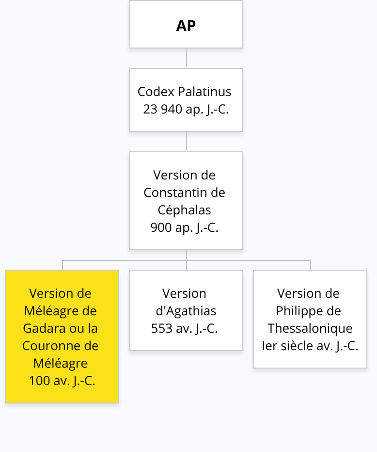
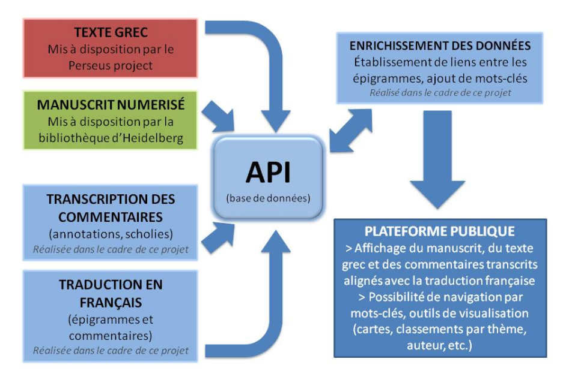
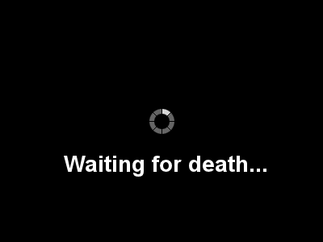
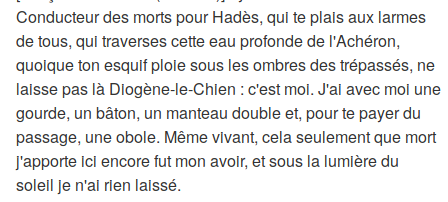
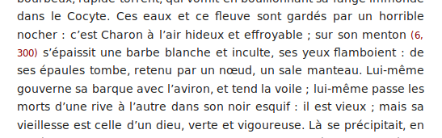
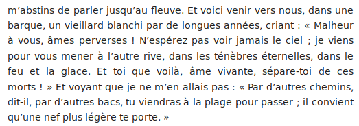
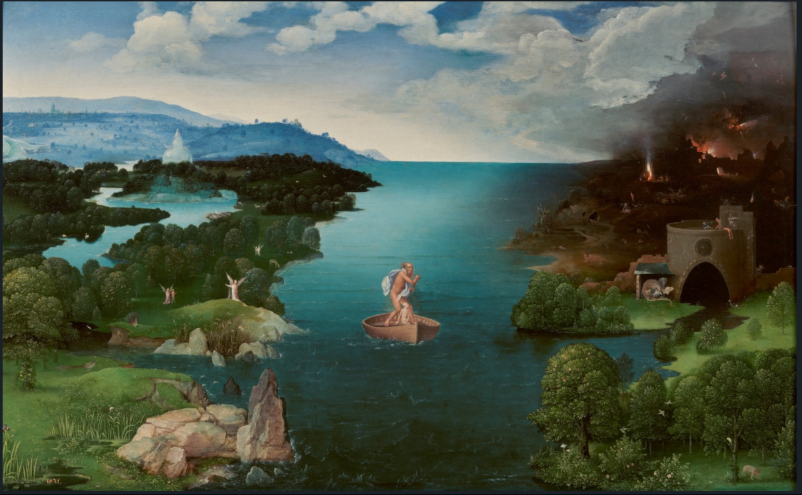
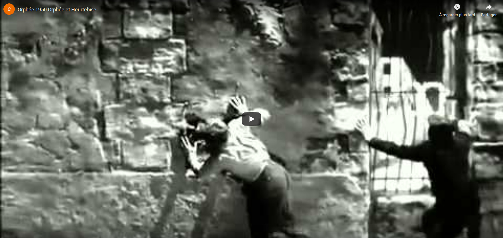

Un projet porté par la
Marcello Vitali-Rosati, Elsa Bouchard, Enrico Agostini Marchese, Joana Casenave, Arthur Juchereau, Servanne Monjour, Nicolas Sauret, Katérina Tzotzi
Chaire de recherche du Canada sur les écritures numériques
dontMarcello Vitali-Rosati, Elsa Bouchard, Enrico Agostini Marchese, Joana Casenave, Arthur Juchereau, Servanne Monjour, Nicolas Sauret, Katérina Tzotzi
AP Généalogie
Hétérogénéité nerveuse
- Plus de 100 auteurs
- 16 siècles d'histoire
- La forme de l'épigramme
- Structure intertextuelle : ἀνθολογία ou florilège
- Dialogue épigrammatique
Tension avec l’idée d’œuvre en tant qu’unité
Une épigramme = une entité
Traversée vers la mort
Exemple d'un Fragment : l'épigramme 7.68


Virgile, Énéide (VI, 317)
Dante, La Divine Comédie (III, 14)


Joachim Patinir, Charon crossing the Styx (1520-1524)

Jean Cocteau, Orphée (1950)

Scorpions, The Sail of Charon (1977)